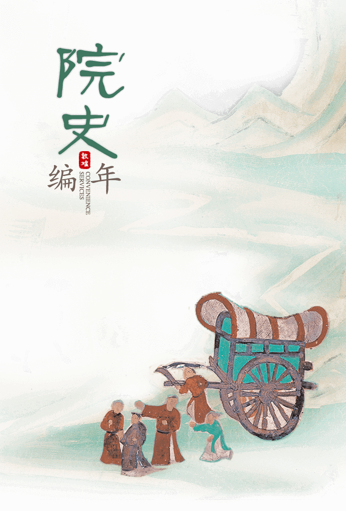
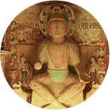

2014—2017
敦煌研究院是国家设立的负责世界文化遗产敦煌莫高窟、全国重点文物保护单位瓜州榆林窟和敦煌西千佛洞保护、研究、弘扬和管理的综合性机构。办院方针为“ 保护、研究、弘扬 ”。其前身是1944年成立的国立敦煌艺术研究所，1950年更名为敦煌文物研究所
- 2014
- 2015
- 2016
- 2017
2009—2013
敦煌研究院是国家设立的负责世界文化遗产敦煌莫高窟、全国重点文物保护单位瓜州榆林窟和敦煌西千佛洞保护、研究、弘扬和管理的综合性机构。办院方针为“ 保护、研究、弘扬 ”。其前身是1944年成立的国立敦煌艺术研究所，1950年更名为敦煌文物研究所
- 2013
- 2012
- 2011
- 2010
- 2009
2004—2008
敦煌研究院是国家设立的负责世界文化遗产敦煌莫高窟、全国重点文物保护单位瓜州榆林窟和敦煌西千佛洞保护、研究、弘扬和管理的综合性机构。办院方针为“ 保护、研究、弘扬 ”。其前身是1944年成立的国立敦煌艺术研究所，1950年更名为敦煌文物研究所